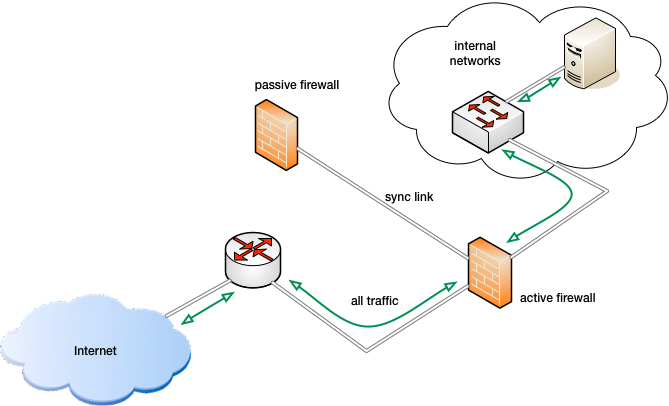

UNIha is a simple high availability solution for Check Point firewall-1. This version is compatible with GAiA and has been tested on R77.10, R77.20 and R77.30, and should work with all later R77.x versions.
The setup requires two identical hosts connected by a patch cable. One host is configured as the active firewall while the other is configured as a passive standby host (passive firewall).
There is only one active firewall at a time.
The passive firewall checks the active for configuration changes. Switching firewall is done by moving cables and operating the terminal user interface.

UNIha does not detect failures on the active firewall. It does not do load share and does not change role based on link. The role (active or passive) is persistent and survives reboot. Check Point offers both high availability and load share solutions; compared to UNIha they are costly and more complex to configure, but offers zero downtime and no connection loss a node in the cluster fails.
UNIha is licensed as described in LICENCE (BSD license) but requires a valid support contract with Check Point Technologies. UNIha is installed as an rpm package.
The passive firewall checks if the firewall configuration on the active firewall has changed each quarter. If the md5 fingerprint of the object database on the active firewall has changed, the passive firewall executes a backup on the active, and restores it on the passive. The restore process starts the firewall on the passive and may re-boot the passive as well.
If changes is made to the active firewall which does not change the object database (e.g. changes to routing) no automatic update is done. In that case you may force an update from the terminal user interface.
UNIha stops the firewall software on the passive and changes the IP address of the link interface shared with the active firewall to match the configuration of the passive.
The backup and restore is done with Check Point commands, and the backup archive is transferred with ssh. The backup and restore does not disrupt the active firewall.
The backup will fail if an CPMI connection is present (GUI running) on the active firewall. In that case the passive waits until the CPMI session ends.
UNIha is focused on keeping the active and passive firewall in sync. It does not detect errors or faults on the active firewall. It does not change configuration on its own initiative. It requires manual intervention. The design has focus on stability on the cost of functionality and uptime.
Reconfiguration is done using the user reconfig, not the default administrator
account. The user login shell is a TUI (terminal user interface). The user has
administrative rights on the firewalls; the TUI is only for convenience. There
is no default password.
The TUI is a front end to /home/UNIha/bin/UNIha
which may be called directly by an experienced administrator or a script.
A short help text is shown when it is called without any arguments.
The Terminal User Interface
enables reconfiguration, role change, shutdown etc. and changing password for
the user reconfig.
Please notice that the the password must be changed on both the active and the passive firewall.
The password for the user reconfig may be set by the administrator using
the command
clish -sc "set user reconfig password"
or set using the TUI with the command
su - reconfig
selecting change password and following the on screen instructions.
Remember to do so on both the active and passive firewall.
Some commands may take longer than other to execute. A list of commands is shown here:
| Menu | Description | Warning | Time |
|---|---|---|---|
| UNIha status | Display status for active and passive | no | short |
| Active | Make this the active firewall | yes | long |
| Passive | Make this the passive firewall | yes | short |
| Switch roles | Switch roles on the two firewalls | yes | long |
| Change password | New password for the user reconfig | no | short |
| Update Time (passive only) | Set time on passive from active | no | short |
| Copy active to passive | Backup active and restore on passive | yes | Very long |
| Power off | Shutdown and power the system off | yes | short |
| Reboot | Reboot the system | yes | long |
| Contact Information | Print phonenumber to UNI-C | no | short |
| About UNIha | History | no | short |
| Run clish | Execute clish (See Check Point documentation) | no | n/a |
| Run /bin/bash | Execute login shell | no | n/a |
Operations which changes the status of the two hosts may require changing cables. Change the cables one at a time in any order before or after the change.
SSH is pesky; the start-up script generates keys if they are not present. If the start-up scripts runs during restore, new keys will be created which will lead to problems with the ssh client complaining about changed keys. A restore will fix that.
Running clish or /bin/bash may be required to solve some problems but is
generally not encouraged.
Contact information:
| Contact | Information |
|---|---|
| Â Name | Contact name |
| Direct phone | +45 12 34 56 78 |
| Main phone | +45 12 34 56 78 |
| contact@email.tld | |
| Address | Address here |
| EAN | REAL EAN |
| CVR | REAL CVR |
Writing down passwords is insecure but convenient. If you do so, then keep it safe.
| Var | value |
|---|---|
| Login user name | reconfig |
| Password | ……………………………………………………. |